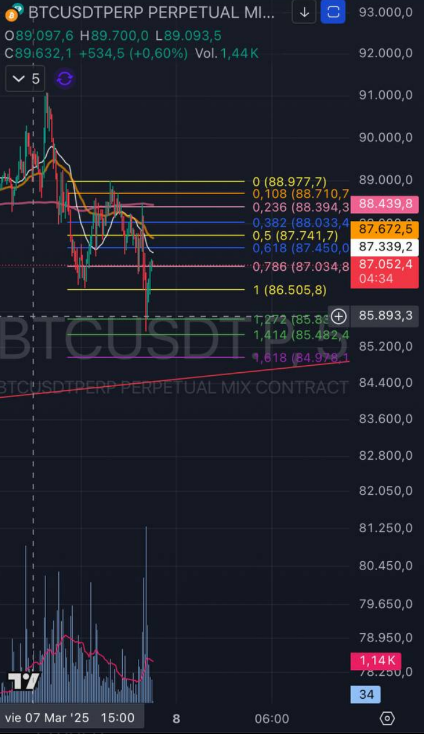
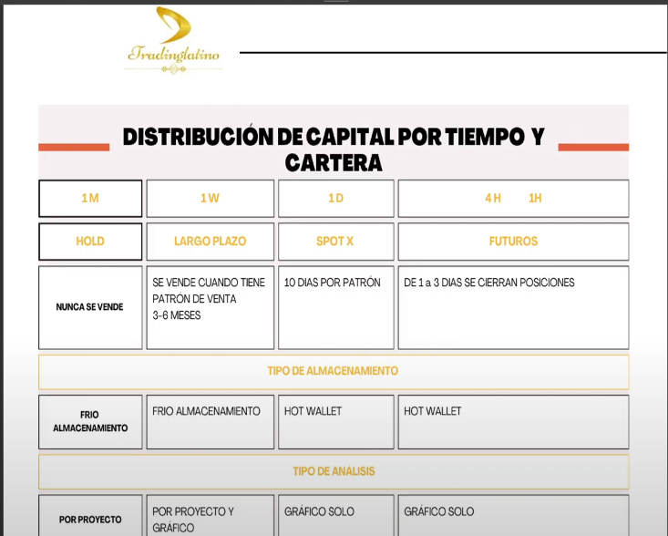

Estrategias
Aquí dejamos estrategias reales, explicadas paso a paso con nuestras palabras. Empezamos por dos: la de Jack (Fibonacci + patrones) y la de zcoin (Smart Money Concepts).
🧭 Estrategia de Jack — Fibonacci como mapa de coordenadas + todos sus patrones
Para Jack el Fibonacci no es una línea mágica: es un mapa de coordenadas. Trazas el retroceso en varios marcos temporales y, cuando el precio golpea los niveles clave, el escenario está montado para buscar entradas con confirmación. Estos son sus patrones, uno por uno:
📐 Patrones sobre niveles de Fibonacci
- Balancín (23,6%): tras una subida vertical con divergencia de volumen, el precio tiende a retirarse hasta el 23,6% del fibo antes de continuar. "Como si una cuerdecita lo tirara hasta tocar el 23,6".
- Colorido (0,382): tras romper la directriz (alcista o bajista), el pullback al 38,2% confirma el patrón. A veces el precio "derrapa" un poco más y da el...
- Yo-Yo: cuando tras el Colorido el precio busca la zona entre el 0,118 y el 0,236, dando un rebote en esa banda antes de seguir.
- Muralla (61,8%): tras el Colorido, la corrección suele ir al 61,8% del fibo trazado desde el rebote del 23,6%.
- Frontera / Almendro: continuación del Muralla: si rompe por debajo y hace pullback al Muralla, señal de cambio de tendencia (Frontera) o entrada tras romper la resistencia que dejó (Almendro), llevando al precio al nivel 1.
- Tic Tac: lateralidad de A a B, el precio vuelve a A (ahora C) y rebota en el Fibo 1 (38,2%). Entrada a largos tras esos 3 pasos; SL entre A y C.
- Trampolín: rompe el 38,2% y toca el 61,8%; suele hacer pullback al nivel anterior.
- Patrón 23,6%: tras una bajada fuerte que no supera el 61,8%, prevé corrección fuerte al tocar suelo.
- Ángelito / Malvado Extendido (1,618): al romper resistencia/soporte y pullbackearlo, el precio va al extendido 1. "Ángelito" si rompe un máximo; "Malvado" si rompe un mínimo.
- Alter Ego: un fibo 1 (rebote/corrección) que puede llegar al 1,618%; clave en los pullbacks, SL bajo soporte/resistencia, TP en el extendido 1.
- Oca: concatenación de Colorido + Muralla + Tic Tac + Frontera, una tras otra.
📦 Patrones de figura (Caja, Malvado, Línea Tibu)
- Patrón Caja: doble techo, HCH o figura distributiva con divergencia de volumen. Trazas una caja entre mínimos y máximos de la figura (y otra encima/debajo). La entrada: romper la directriz secundaria y la NEC (base de la caja) y pullbackear el 0,786 del fibo. SL sobre el 0,618; TP en la base de la segunda caja.
- Patrón Malvado Extendido 1: doble techo con divergencia; al romper la secundaria y la NEC, el pullback al 0,786 es la entrada en corto. SL pelín sobre el 0,618; TP en 1,618 o base de la caja. Confirma tocando las líneas verdes 1,272 / 1,414 (pero esas no son la entrada).
- Línea Tibu: la última resistencia/soporte roto antes de operar. Si el precio no la supera, no se entra. Es el filtro final.
🌿 Patrones con EMAs (Liana y familia)
- Liana (EMAs 200/50): tras subida exponencial que perdió la EMA 50 y la pullbackeó, si la 50 está en pendiente negativa y la 200 en positiva, el precio suele rebotar buscando el pullback a la directriz. Da un "respiro" a la caída.
- Imán: el precio muy lejos de la EMA 50/200 tiende a volver hacia ella "como un imán" (sentimiento de mercado, no para operar solo).
- Esperanza (Golden Cross): EMA 50 cruza por encima de la 200 y hace pullback a la lenta → fortaleza alcista.
- Apocalipsis (Death Cross): EMA 50 cruza por debajo de la 200 y pullbackea la rápida → fortaleza bajista.
- Autopista: la media de las BB por encima de la EMA 50 y esta sobre la 200 = tendencia alcista fuerte; al revés = bajista.
🌊 Patrones de volumen e indicadores (Koncorde, Kame, RSI)
- Koncorde (ballenas y peces): azul = ballenas (manos fuertes), verde = peces (manos débiles), montaña = tendencia, línea roja = media del precio. Patrones: Corte (la roja corta la montaña = entrada alcista), Cero (montaña cerca de 0 = cambio de tendencia), Primavera, Espejo (pánico de peces + compra de ballenas = buen precio), Cachalote, Abrazo del oso, 700 (fuerza >600-700), Super Saiyajin (el más potente).
- Kame / Dominó (Mago Estraperlo, Bandas de Bollinger): cuando las BB se estrechan, viene un Kame caliente (lateral → explosión). Al descargar ~30% del Kame, el precio revienta en una dirección; el Kame frío marca la fuerza de la subida. Las "fichas de dominó": un Kame en TF pequeño se confirma en TF superiores.
- RSI — Patrón Arco: movimiento desde >70% bajando, o desde <30% subiendo.
- RSI Estocástico — Patrón Cerbatana: cruces de la azul y naranja en zona blanca formando doble techo/suelo antes de definir dirección.
- Gallinas Calientes (Dominancia BTC): al subir la dominancia de Bitcoin, las altcoins bajan (y viceversa).
🎯 Otros patrones de acción y tiempo
- Matriuska: los patrones se aplican en cualquier TF (scalping 1m/5m o swing semanal). Jack pasó una cuenta de 25$ a 3.000$ en 24h haciendo scalping con ellos.
- Ascensor: barrida de stops en ambas direcciones; si sube y luego baja el doble.
- Anzuelo: fibo + divergencia + ADX (>35). Entra al romper la tendencia; SL en 23,6%, TP en -23,6%.
- Pullback / Telescopio: buscar la entrada en el retroceso a zona clave, acercando/alejando el composite entre temporalidades.
- Barcos Hundidos / Tour / Lapsus: directrices + clusters de precio para timing de entrada/salida.
- Semáforo: estadística cripto — sábados suelen alcistas, domingos bajistas.
- Boomerang: los gaps de futuros CME tienden a cerrarse.
⚠️ La clave, según Jack: no es el dibujo, es entender el volumen (cuándo y dónde aparece). Ahí está el ratio de acierto. Y nada de esto es asesoramiento financiero.

💎 Estrategia de zcoin — Smart Money Concepts (SMC) + gestión por tiempo
La base de zcoin es simple de enunciar y difícil de dominar: operar a favor del dinero inteligente, no contra él. Para leerlo usa el indicador Smart Money Concepts de LuxAlgo, que pinta sobre el gráfico los lugares donde operan las manos fuertes:
- Order Blocks (OB): zonas donde la institución acumuló antes de mover el precio. La entrada no es en la ruptura, sino en el pullback (retorno) a ese bloque una vez barrido.
- BOS / CHoCH: ruptura de estructura y cambio de carácter. El BOS confirma que la tendencia sigue; el CHoCH avisa de que puede girar. Se usan para confirmar dirección.
- Fair Value Gaps (FVG): huecos de desequilibrio (una vela grande deja un vacío que el precio suele ir a rellenar). Son zonas de "carrera" del precio.
- Liquidez: máximos/mínimos iguales (EQH/EQL) donde se cazan las órdenes de stop antes de revertir. El precio "caza liquidez" y arranca.
- Premium / Discount: zonas de la vela donde el precio está caro (premium) o barato (discount) respecto al rango.
El flujo de zcoin en la práctica: espera a que el precio barra un order block y deje un FVG, confirma con BOS/CHoCH, y entra en el retorno al bloque con la estructura a favor. Nada de adivinar: se opera lo que ya dibujó el precio.
Y la regla que lo sostiene — gestión por tiempo: reparte el capital según el horizonte, no por intuición.
- 1M (mensual) = HOLD: "nunca se vende". Cartera a muy largo plazo, análisis fundamental profundo, cold storage.
- 1W / 1D = swing: ciclos de ~10 días por patrón; se vende solo si aparece patrón de venta en 3-6 meses. Análisis mixto (proyecto + gráfico), hot wallet.
- 4H / 1H (futuros): cierre obligatorio entre 1 y 3 días, solo análisis técnico ("gráfico solo"), apalancamiento y liquidez inmediata en hot wallet.
⚠️ Separar cartera a largo plazo (cold storage) de la operativa activa (hot wallet) es lo que mantiene el riesgo bajo control. Y recuerda: esto no es asesoramiento financiero.
